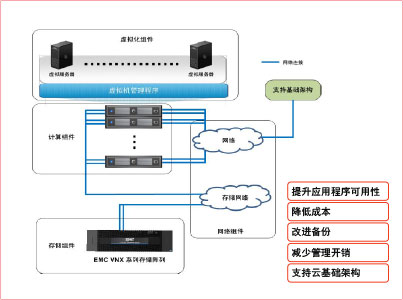
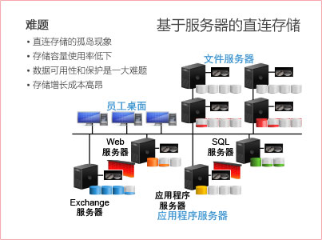
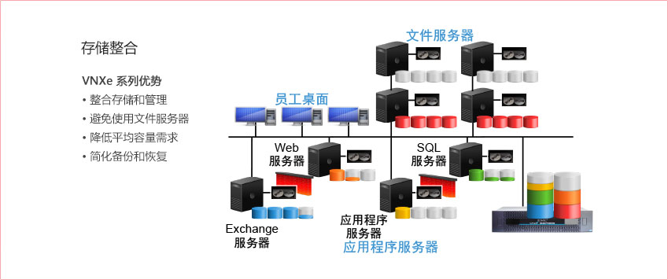
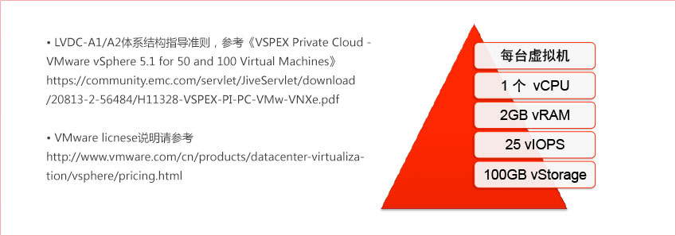

Lenovo VDC参考架构优势

典型客户环境

Lenovo VDC使用场景一

Lenovo VDC使用场景二

LVDC-A1
支持25台虚拟服务器，为小型环境提供服务器整合与业务连续性
LVDC-A1 参考配置
- ThinkServer RD630 （两路八核，64GB内存，六口千兆以太网卡）两台
- 中心应用服务器采用联想ThinkServer RD640服务器4台。
- VNXe3150 （600GB SAS 十一块，满配千兆以太网口，NFS协议）
- VNXe3150 （600GB SAS 十一块，满配千兆以太网口，NFS协议）
- 千兆以太网络交换机两台（通过VLAN划分实现应用/数据/管理三网隔离）
LVDC-A2
支持50台虚拟服务器，采用主动式运营管理实现服务器整合，无计划内停机
LVDC-A2 参考配置
- ThinkServer RD630 （两路八核，64GB内存，六口千兆以太网卡）三台
- VNXe3150 （600GB SAS二十一块，满配千兆以太网口，NFS协议）
- VMware vSphere with Operations Management Standard Acceleration Kit（支持三台主机，每台主机最多两个物理CPU，支持VDC主动式统一运维管理）
- 千兆以太网络交换机两台（通过VLAN划分实现应用/数据/管理三网隔离）
- *Avamar 3.9TB版本（虚拟环境数据保护，支持应用级数据一致性备份）
虚拟服务器VM定义
